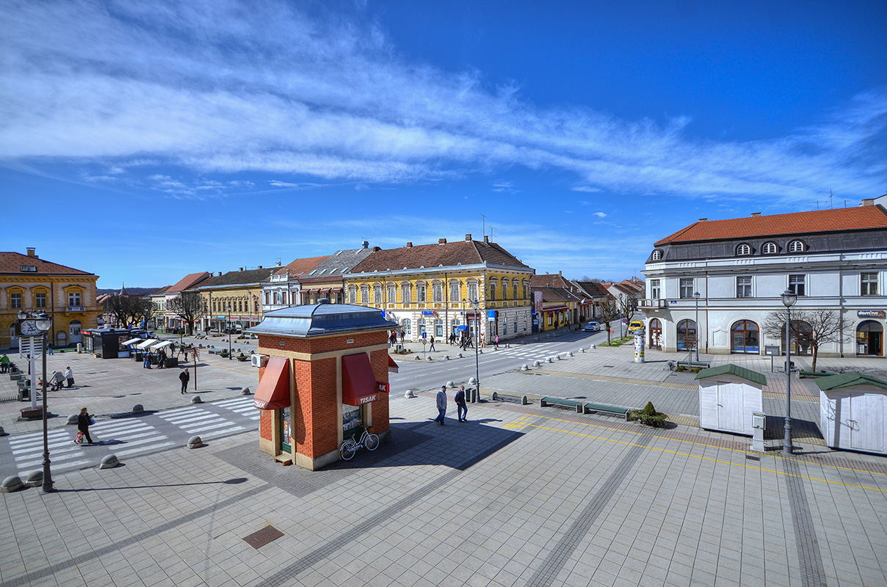

Centar grada Daruvara

Centar grada Daruvara predstavlja srce ovog pitoresknog grada smještenog u sjeverozapadnoj Hrvatskoj. S bogatom poviješću i šarmom, Daruvar nudi posjetiteljima autentično iskustvo i mnoštvo zanimljivih atrakcija. Glavni trg u centru grada je Trg kralja Tomislava, koji je središnje mjesto za druženje, opuštanje i obavljanje svakodnevnih aktivnosti. Trg je okružen lijepim zgradama, kafićima, restoranima i trgovinama. Tu se nalazi i prekrasna barokna župna crkva sv. Antuna Padovanskog koja privlači pažnju svojom impozantnom arhitekturom. U blizini trga, nalazi se i Daruvarski dvorac, jedan od najljepših dvoraca u Hrvatskoj. Izgrađen u baroknom stilu, dvorac se smjestio u prekrasnom parku s jezerom i šetnicama. Danas je dvorac preuređen u luksuzni hotel s restoranom i wellness centrom, pružajući posjetiteljima mogućnost da dožive povijest i eleganciju ovog posebnog mjesta. Šetnja gradskim ulicama otkriva očaravajuću arhitekturu s elementima baroka, secesije i historicizma. Tu su i prekrasne secesijske vile koje svjedoče o prošlom sjaju i bogatstvu grada.
- Centar grada Daruvara je živahno središte s bogatom poviješću i kulturnim nasljeđem.
- Smješten je u srcu grada i okružen zanimljivim arhitektonskim znamenitostima.
- Na glavnom trgu, Trgu kralja Tomislava, nalazi se prekrasan barokni Stari grad s prepoznatljivim tornjem.
- U blizini se nalazi i lijepa pješačka zona s trgovinama, kafićima i restoranima..
- Centar grada Daruvara nudi razne događaje i manifestacije tijekom godine, uključujući tradicionalne festivala i sajmove.
- Tu su i brojne kulturne institucije, poput kazališta, muzeja i galerija, koje pružaju mogućnost za upoznavanje s umjetnošću i kulturom grada.